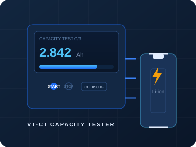
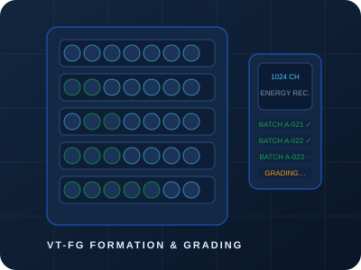
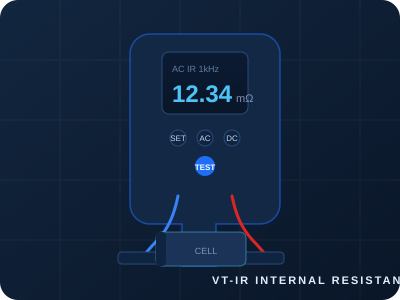
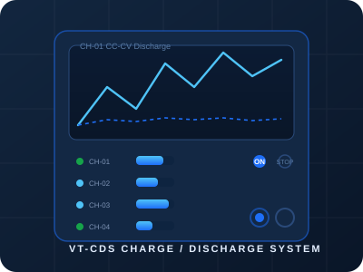

Battery Capacity Testers
Dedicated grading systems with up to 512 channels per cabinet.
View capacity tester details →The first charge that decides a cell's life. High-density formation and grading systems built for gigafactory-scale lithium battery production.

The VT-FG series forms cells with precisely controlled first charge profiles and then grades them by capacity, internal resistance and voltage — all in one automated production system with full data traceability.
| Model | Voltage Range | Current Range | Channels / Cabinet | Energy Recovery | Best For |
|---|---|---|---|---|---|
| VT-FG-5V10A | 0–5 V | 0.1 mA–10 A | 512 / 1024 | ≥90% | Cylindrical cell formation |
| VT-FG-5V20A | 0–5 V | 0.1 mA–20 A | 256 / 512 | ≥90% | Prismatic / pouch formation |
| VT-FG-10V10A | 0–10 V | 0.1 mA–10 A | 256 | ≥88% | High-voltage cell formats |
Systems include temperature-controlled formation rooms, tray fixtures and full factory acceptance testing.
Massive channel density cuts floor space and cost per channel for large-scale production.
≥90% of discharge energy returned to the grid — lower OpEx, lower heat, greener factory.
Multi-step CC/CV/CP formation profiles with per-step limits, dV/dt and rest control.
Grade by capacity, IR, self-discharge and voltage consistency; sort into bins automatically.
Barcode-linked records per cell — from electrode batch to final grade, fully retrievable.
Quick-release trays reduce load/unload time between formation batches.
Per-channel protection and isolation so one bad cell never halts a batch.
REST/OPC-UA interfaces push data to your MES for live production dashboards.
The VT-FG series is the production backbone of modern lithium battery testing.
Tell us your cell format and daily output target — we'll engineer the complete formation and grading line.
Request a Quote →Free application consultation · 24-hour response
Formation is the first charge-discharge cycle applied to a newly manufactured lithium-ion cell. It activates the cell's electrochemistry, forms the solid electrolyte interphase (SEI) layer on the anode, and determines the cell's initial capacity and cycle life characteristics. Proper formation is critical for cell quality and consistency.
After formation, each cell is discharged to measure its actual capacity. Cells are then sorted (graded) by capacity value, internal resistance and OCV into bins — typically A, B, C grades. The VoltTest formation system automates this entire process with up to 1024 channels per cabinet and MES integration for full traceability.
During the discharge phase of formation, instead of wasting the cell's energy as heat, the regenerative circuit feeds it back to the power grid. VoltTest formation systems recover ≥90% of discharge energy, which is critical for cell factories where thousands of channels operate simultaneously — reducing both energy cost and HVAC load.
A single VoltTest formation cabinet supports up to 256 channels. Multiple cabinets can be networked to build systems with 512, 1024 or more channels. A typical cell factory line uses 2000–5000 channels total, organized into groups of 256-channel cabinets managed by a central server.
Yes. VoltTest formation systems include a central management server with OPC-UA and SQL interfaces for MES/ERP integration. Every cell's formation data (current/voltage profiles, temperature, capacity, IR, grade) is stored in a database with full traceability for quality management and warranty tracking.

Dedicated grading systems with up to 512 channels per cabinet.
View capacity tester details →
Inline IR measurement to complete the grading criteria set.
View internal resistance tester specs →
Laboratory cyclers for process development and recipe validation.
View battery cycler specifications →Get a formation & grading system quotation with line design, installation and operator training included.